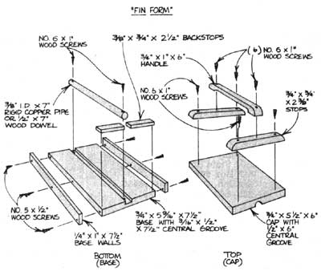

Solar On A Shoestring: Mother's Amazing Fin Press
You can make these inexpensive heat-grabbing fins for your solar collector
By the Mother Earth News staff
January/February 1980
Here's a simple-to-build device that will enable you to construct all the heatcatching fins you'll need for most any homemade solar water heater ... out of free-for-the-gathering tin soda or soup cans! (Actually, even if you decide to make your sheeting out of copper, you'll still want to use our research staff's latest invention- MOTHER's Fin Press -to help you establish the maximum heat-transferring. surface contact between your water pipes and your collector's fins.)
Until now, folks either soldered their copper water piping directly onto a flat collector sheet, made a V-notch "trough" for the pipework with angle iron, or hired a machinist to make some conduit-hugging semicircular grooves in the back plating. Unfortunately, the first pair of techniques produce very little contact between the two metals (so a lot of heat gathered by the flat sheets never gets to the water pipes), while the last approach works fine ... but is dang expensive!
Well, MOTHER's Amazing Fin Press was invented to solve that inefficiency versus-cost dilemma. The bottom section of this two-piece unit consists of a seven-inch length of 3/8" copper pipe (or 1/2" wooden dowel) that's been set- to a depth of slightly less than half its diameter-into a side-walled block. The top piece is little more than another block that has been grooved to fit over the baseboard's projecting pipe, To work the fin shaper, just position a flat, precut piece of copper or tin on the base, put the cap over it, and push down. Presto! You have one grooved fin ready to cradle a bit of collector pipe!
MOTHER's Fin Press can be made in only a few minutes out of scrap pipe and lumber bits, and is simplicity itself to construct. In fact, the accompanying "Fin Form" illustration should be pretty much self-explanatory ... except for the following two details: [1] To make the top press's central groove, handsaw a few starting notches, dig out the basic trough with an inexpensive Stanley Surform round file, and finish shaping the "ditch" with sandpaper. [2] If you don't wish to duplicate our cap's attractive three-piece handle, a short piece of 2 X 4-nailed across the top board-will provide the needed structural reinforcement.
HOW TO MAKE AND ATTACH TIN FINS
To turn free soup or soda cans into solar collector fins, just cut both the lids and the end rims off your scrounged cylinders with an electric-or manually-cranked, wall-fastened-can opener (hold the tins in a horizontal, rather than vertical, position when you do this). Then-using steel wool or a propane torch -buff or bum off the metal's protective coating. Cut each can down the middle, trim the sheet to a flat 5-1/2" X 6" shape ... and press it.
When you're ready to secure a fin to some pipe, just lay the shaped tin on two fireproof boards (or blocks, or bricks) placed side by side with a pipe width's space between them. Nestle the fin's curved center section into the gap, set your collector pipe into position, hold It in place with any heavy nonflammable -weight (to increase sheet-to-pipe contact), and solder the two metals together. Add more fins to your pipe-by laying out the grooved sheets, weighting, and soldering-until you've completed your platemaking ... then buff off any extra flux along the length of the pipe.
When all that's done, you'll have finished a crucial (and often the most expensive) step of your home-designed solar hookup ... and the cost for all your collector's fins will be a grand total of zero dollars and zero cents!
 STAFF PHOTOS To make grooved collector pieces from soda, soup?or even motor oil-cans, assemble a fin press (as shown in the below diagram) and follow the four-step construction sequence shown above. [1] Slice open a ""beheaded"" tin cylinder and trim the metal to size. [2] Place the sheet between your fin shaper's cap and base ... and press! [3] Then simply pull out the grooved metal, and ... [4] solder the finished fin to your copper collector pipe. |
 |
|